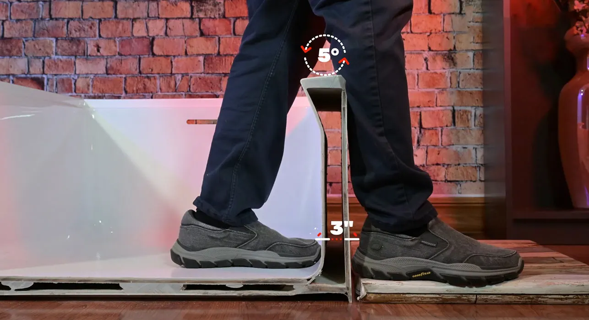
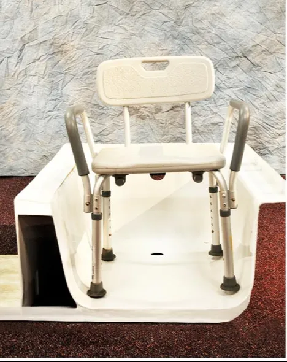

Step out standing
The front wall angles in under the rim, so your inside foot steps right up to the edge. You stand straight instead of leaning out over the side.
Easy-entry bathtub for aging in place
For homeowners planning to stay in their home, and the families helping them. Perfectub's patented undercut lets you step out standing upright, the flat floor keeps a shower chair level, and it fits the 60-inch alcove you already have.
Shipping included. Limited lifetime warranty. 30-day returns.

What makes it safer
The front wall angles in under the rim, so your inside foot steps right up to the edge. You stand straight instead of leaning out over the side.
The flat floor gives steady footing and keeps a standard shower chair level. No legs sliding on a curved bottom.
The undercut doubles as a built-in splash guard, keeping water off the bathroom floor, a common cause of slips.
Built for a shower chair
Most tubs have a curved bottom, so a shower chair rocks or sits at an angle. Perfectub's floor is flat from wall to wall, with narrow-radius corners, so a standard chair sits level and steady.
Both tubs in these photos were cut in half to show the shape.


Shopping for a parent?
Call and you speak with a founding team member who can answer sizing and installation questions. Or visit one of more than 35 showrooms together and try the step in person.
If lifting a foot over the side of any tub isn't safe, talk with a doctor or an occupational therapist about a walk-in tub or a curbless shower.
The design of the tub is indeed user friendly and saves lives.
Sizes and prices
Shipping included anywhere in the U.S., by freight on a pallet. Waste and overflow kit included. Limited lifetime warranty and 30-day returns. Full specifications
The 60 x 32 model meets ADA (Americans with Disabilities Act) height guidelines. For a specific project's requirements, call (516) 217-4599.
Yes. The flat floor keeps a standard shower chair level and steady, with all four legs on one surface.
No. There's no door. It's a standard-size alcove tub shaped to be easier to get in and out of.
Yes, if your alcove is the standard 60 inches long. It installs like a standard alcove tub, with the waste and overflow kit in the box.
Yes. Unused tubs can be returned within 30 days in the original packaging, with proof of purchase.
Order online with shipping included, call to talk it through, or try one at a showroom near you.